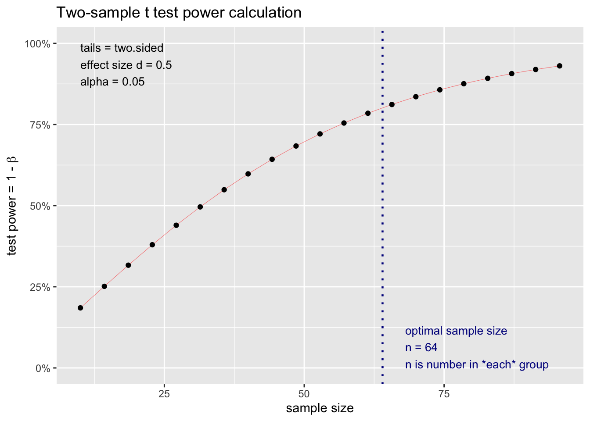

Lab 03: Power & Sample Size Planning
There are two types of error a researcher can make when conductin a null hypothesis significance testing: Type I (\(\alpha\)) and Type II (\(\beta\)) errors. Type I error is the probability of rejecting the null hypothesis, \(H_0\), when it is true. In other words, it is the false positive rate. Conventionally, type I error is set at \(\alpha = .05\). Type II error is the probability of failing to detect a significant result, when \(H_0\) is false; i.e., the false negative rate. Power is defined as \(1-\beta\) or the probability of successfully detecting an effect, when \(H_0\) is false.
There are four parameters in power analysis.
- Sample size
- Effect size
- Alpha level
- Power level
Knowing 3 of these 4, we can determine the remaining one. For example, we can conduct a priori power analysis to determine a sample size for a study with an effect size \(d = .50\), power = .80, and alpha = .05.
The current practice increasingly requires researchers to justify their sample size before conducting a study. This was done to encourage a better research practice as well as reducing wasteful resource in doing underpowered studies.
We will look at two programs for power analysis G*Power and pwr package in R.
1. G*Power
G*Power, developed by a group of researchers at Heinrich-Heine-Universität Düsseldorf, provides a user-friendly GUI for conducting power analysis. It covers wide range of statistical analysis, although some complicated design are still missing. You can download the program here.

G*Power
- Select the test family, e.g., t tests, F tests, \(\chi^2\) test. For this example, we will do an independent t test.
- Select a specific statistical test. For example, t tests can be used in many sitations: between-subject design, within-subject design, one-sample test, testing slopes or intercepts for regression. In this case, we will use “Means: Difference between two independent means (two groups)” for an independent t test.
- Select a type of power analysis. We will choose “A priori: Compute required sample size”
- Input relevant parameters
- Tail(s): Choose whether you use a one-tailed or two-tailed hypothesis.
- Effect size d: Cohen’d; hover the pointer above the box, it will show the conventional values. 4.1 The program can help you calculate d if you have information on M and SD for each group.
- \(\alpha\) err prob: set alpha to .05
- Power: set to .80
- Allocation ration N2/N1: If you will use balanced design (equal n), use 1.
- Click calculate
- The required sample size will appear here.
2. pwr package
#install.packages("pwr")
library(pwr)You can read more about the package here.
The pwr package provides functions for power analysis of many statistical tests. However, for more complex design, e.g., factorial or repeated-measure, we will need to use a diferent package.
We will take a look at pwr.t.test function, which is used to analyze power for t tests with two-sample(equal n), one-sample, and paired t tests.
The function takes multiple arguments:
pwr.t.test(n = NULL,
d = NULL,
sig.level = 0.05,
power = NULL,
type = c("two.sample", "one.sample", "paired"),
alternative = c("two.sided", "less", "greater"))To determine n, you will leave it out and enter only d and power. You also need to specify type (of t test) and alternative (two-tail or one-tail tests).
Following the same example.
pwr.t.test(d=.5, sig.level=.05, power = .8, type = "two.sample", alternative = "two.sided")##
## Two-sample t test power calculation
##
## n = 63.76561
## d = 0.5
## sig.level = 0.05
## power = 0.8
## alternative = two.sided
##
## NOTE: n is number in *each* groupThe n in the output tells us how many participants we need for each group.
Plotting a power graph
You can also plot the graph showing power level and sample size for a certain parameters.
medium_power <- pwr.t.test(d=.5, sig.level=.05, power = .8, type = "two.sample", alternative = "two.sided")
plot(medium_power)
Other power functions
One-way ANOVA
We can use pwr.anova.test to calculate required sample size for a particular effect size. We will need to specify k (number of groups), f (Cohen’s f), and power (desired power level).
library(pwr)
pwr.anova.test(k = 3, f = .25, power = .8) # An example of medium effect size with three conditions. ##
## Balanced one-way analysis of variance power calculation
##
## k = 3
## n = 52.3966
## f = 0.25
## sig.level = 0.05
## power = 0.8
##
## NOTE: n is number in each groupCopyright © 2022 Kris Ariyabuddhiphongs